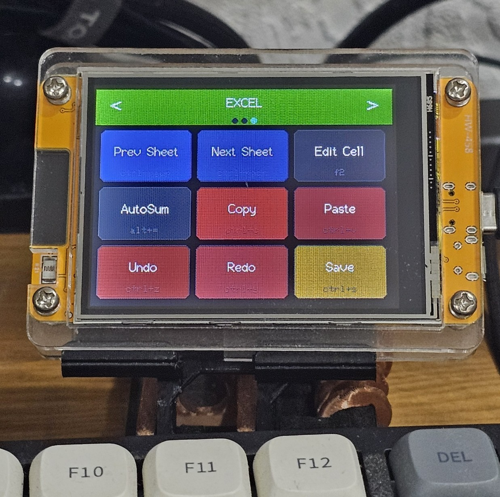
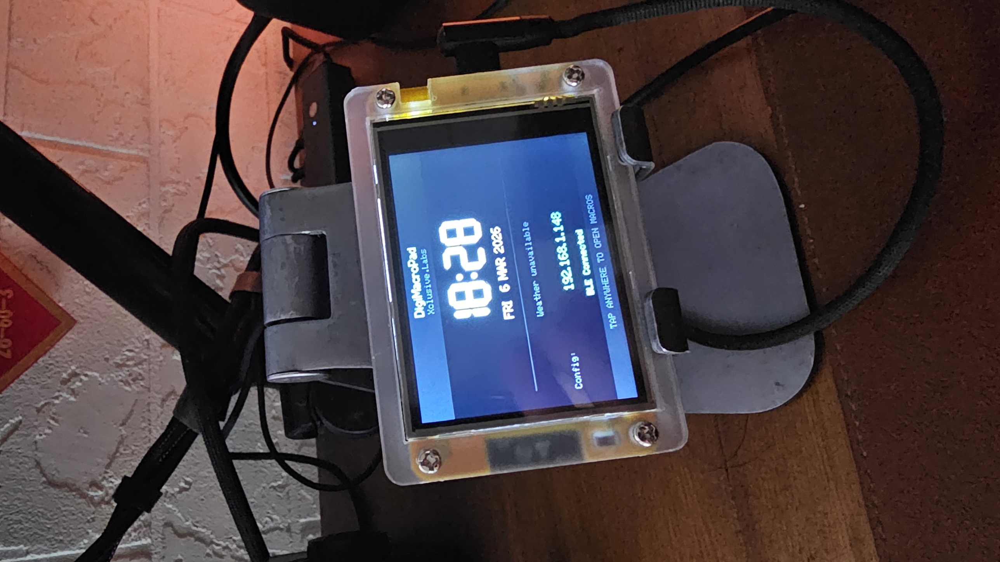
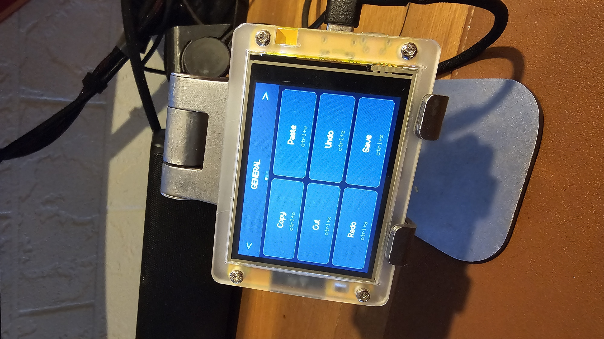
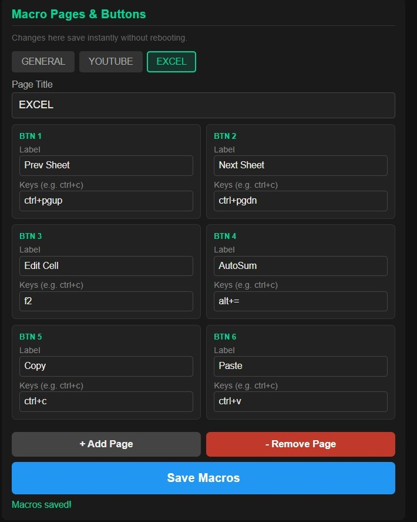

DigiMacroPad
Your personal shortcut hub. Create up to 90 fully customisable shortcuts across 10 pages — put copy, paste, and any action you use daily a single press away.
What is DigiMacroPad?
DigiMacroPad is a compact USB device that puts your most-used shortcuts at your fingertips. Assign any keyboard shortcut — copy, paste, undo, screenshot, or anything you use daily — to a dedicated button and trigger it instantly without hunting through menus or remembering key combos.
With 10 switchable pages and 9 shortcuts per page, you get 90 fully customisable shortcuts in total. Organise them by app, task, or workflow and switch pages on the fly to stay in the zone.
Features
- 90 fully customisable shortcuts — 10 pages × 9 per page
- Assign any keyboard shortcut or key combination to any button
- Switch pages on the fly to match your current task
- USB plug-and-play — no drivers required
- Compatible with Windows, macOS, and Linux
- Configure shortcuts easily through the companion software
Specifications
| Buttons | 9 per page |
| Pages | 10 |
| Total shortcuts | 90 |
| Connection | USB-C |
| Compatibility | Win / macOS / Linux |
| Dimensions | 85 × 60 × 15 mm |
| Weight | 66 g |
See it in action

Clock & Weather Excel Shortcuts
Excel Shortcuts

General Shortcuts
ConfigurationFirmware Downloads
Download and flash the latest firmware to keep your DigiMacroPad up to date.
.bin file. Your shortcut assignments are preserved after flashing.
Frequently Asked Questions
Can't find what you're looking for? Contact us.
How many shortcuts can I create?
What kind of shortcuts can I assign?
How do I switch between pages?
Is it compatible with Windows and macOS?
How do I update the firmware?
.bin file.
Your shortcut assignments are preserved after flashing.